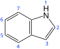

indole

Definition: Indole is an aromatic, heterocyclic, organic compound with the formula C8H7N. It has a bicyclic structure, consisting of a six-membered benzene ring fused to a five-membered pyrrole ring. Indole is widely distributed in the natural environment and can be produced by a variety of bacteria. As an intercellular signal molecule, indole regulates various aspects of bacterial physiology, including spore formation, plasmid stability, resistance to drugs, biofilm formation, and virulence. The amino acid tryptophan is an indole derivative and the precursor of the neurotransmitter serotonin.
Source: Wikipedia
Wikipedia Page
Wikidata Page